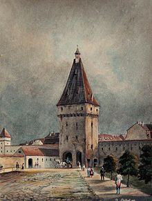

Istoria Sibiului
Sibiul, cu o istorie remarcabilă, străbate veacurile ca un oraș bogat în amintiri.
Acestea sunt cateva momente importante din istoria Sibiului:

- Primele mențiuni istorice despre Sibiu datează din perioada romană, când a fost un important punct de așezare și comerț.
- Sibiul a cunoscut o perioadă de înflorire în Evul Mediu, devenind un centru comercial vital în cadrul Ligii Săsești și dezvoltându-se ca un oraș fortificat cu arhitectură medievală impresionantă.
- În secolul al XIII-lea, Sibiul a devenit un membru activ al Hansei Săsești, reprezentând o comunitate săsească înfloritoare.
- Orașul a adoptat reforma protestantă în secolul al XVI-lea, jucând un rol important în răspândirea acestei mișcări religioase.
- În timpul perioadei habsburgice, Sibiul a devenit un centru cultural și educațional, cu universitatea sa fondată în 1786.
- Sibiul a fost implicat în mișcarea națională românească și a devenit capitala provinciei autonome a Transilvaniei în cadrul Imperiului Austro-Ungar.
- După cel de-al Doilea Război Mondial, Sibiul a făcut parte din Republica Populară Română, iar în perioada comunistă a fost martor al schimbărilor sociale și economice.
- Sibiul a jucat un rol semnificativ în evenimentele Revoluției Române, atrăgând atenția internațională prin protestele și activismul său.
- După căderea regimului comunist, Sibiul a devenit un important centru cultural, economic și turistic în România, găzduind evenimente culturale majore, inclusiv Festivalul Internațional de Teatru de la Sibiu.